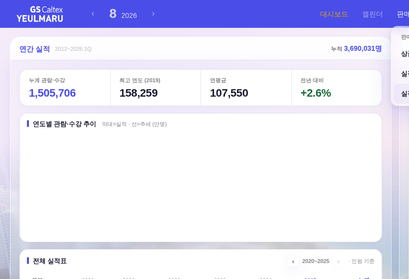
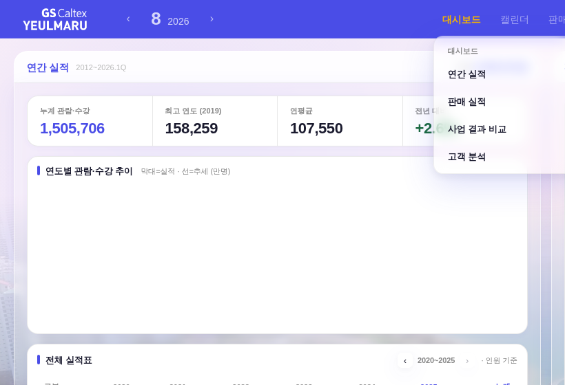
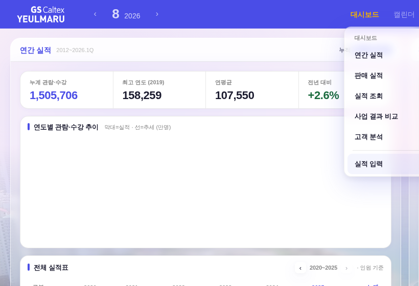

지시(운영자): ① 판매 현황 대메뉴 삭제 ② 실적 조회 → 대시보드의 「판매 실적」 하단부 ③ 실적 입력 → 대시보드 맨 아래 ④ 상품 등록·변경 = 제거.



실적 조회 = 「판매 실적」 바로 아래 · 실적 입력(관리자) = 구분선 밑 맨 아래(강조 배경 = 구 판매 현황 문법 계승) · 신규 색·클래스 0.
_qaDeepLink 구 해시(sales·sale·product·prodreg 등) = biz alias 흡수(딥링크 끊김 0)_dailyRestoreOrigin bizmenu · 구 salesmenu 토큰 호환)_salesMenuBuild·openTicketReg(상품 등록·변경) = 휴면 보존(PLAY ZONE 선례 — 되살리기 절차 주석) · 모바일(하단 네비 「판매」·더보기 「실적 조회」)은 무접촉게이트: check_design 1605/1605 · smoke_layout PASS · smoke_login PASS · 인라인 JS 문법 ✓.